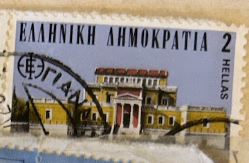
| SOURCE | TITLE| IMAGE MATCH | click to source page |
| eBay | GREECE SCOTT #1416 MNH BUILDING TOPICAL | eBay | 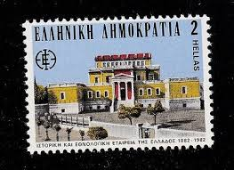 |
| Bob Shop | Greece - THEMATIC ARCHITECTURE GREECE ULH for sale in Durban (ID:671522336) | 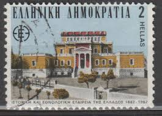 |
| Blogger.com | Ελληνικά Γραμματόσημα - Greek Stamps & Thematic colections: 1982 Ελληνικά γραμματόσημα | 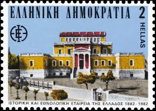 |
| Dreamstime.com | 2,516 Greece Stamp Old Stock Photos - Free & Royalty-Free Stock Photos from Dreamstime | 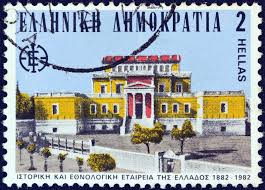 |
| Colnect | Greece : Stamps [Year: 1982] [1/4] : Colnect 📮 | 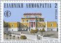 |
| PicClick FR | TIMBRE GRECE HELLAS Stamp 1983 Mythologie EUR 1,30 - PicClick FR | 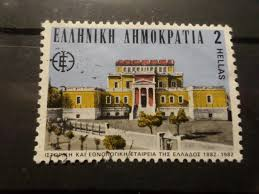 |
| Vendora.bg | Пощенска марка Гръцка демокрация 100… - € 0,30 - Vendora.bg | 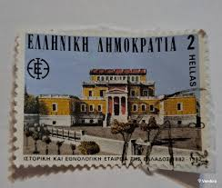 |
| Aukro | Brazilie - Antiga Alfândega - Stará celnice | Aukro | 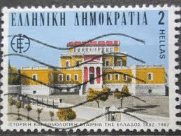 |
| pirkis.lt | Graikija 1982 1475 Parlamentas 1z. svarus | 43344199 | 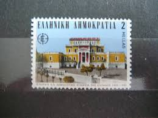 |
| Dreamstime.com | Kolokotroni Street Stock Photos - Free & Royalty-Free Stock Photos from Dreamstime | 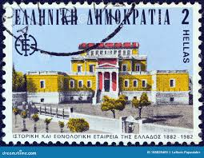 |
| BidCurios | Greece - MNH Stamp - 1982 - Historical Building - (B-002/Q6)g - BidCurios | 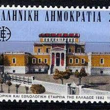 |
| Vendora | Γραμματόσημο Ελληνική Δημοκρατία 100… - € 0,30 - Vendora.gr | 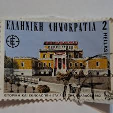 |
| Wikipedia | Kansallinen historiallinen museo (Ateena) – Wikipedia | 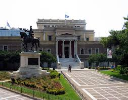 |
| Tripadvisor | 2026 Ancient Greek Customs, Games & the Underworld walking tour (Athens) - with Trusted Reviews | 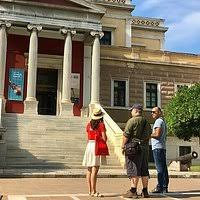 |
| Wikipedia | National Historical Museum, Athens - Wikipedia | 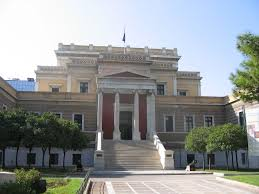 |
| GetYourGuide | Athens Uncovered: Private Ruins, Markets & Local Secrets | GetYourGuide | 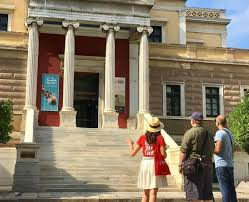 |
| Wikimedia.org | File:Athens Old Parliament House (Μέγαρο της Παλαιάς Βουλής) - panoramio.jpg - Wikimedia Commons | 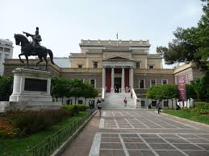 |
| Tripadvisor | THE BEST Rafina Shore Excursions (with Prices) - Tripadvisor | 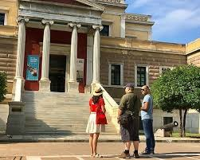 |
| eKathimerini.com | Faces of Athens over 200 years | eKathimerini.com | 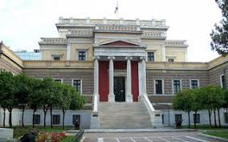 |
| Wikipedia | Museum Sejarah Nasional, Athena - Wikipedia bahasa Indonesia, ensiklopedia bebas | 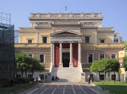 |
| azurewebsites.net | 5 museums you need to visit in Athens - Greek Herald | 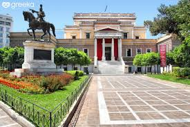 |
| Alamy | Old Parliament House, Athens, Greece Stock Photo - Alamy | 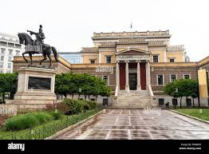 |
| Alamy | Athens Greece Old Parliament Palea Vouli National Historic Museum Equestrian Statue of Theodoros Kolokotronis Stock Photo - Alamy | 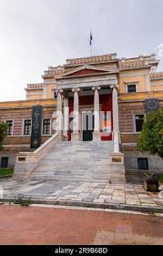 |
| Dreamstime.com | The Old Parliament House Neoclassical Building in Athens, Greece Stock Image - Image of statue, city: 230820871 | 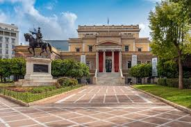 |
| Airbnb | Athens Social and Political Walk · ☆4.95 | 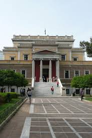 |
| Welcome August! 8 Days to go… “With your Leo Sun Golden Light in Déesse. An 8 of Cards where the Ace demands. A Signature frequency of minds and hearts. It just roared. | 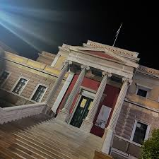 | |
| Wikimedia.org | File:The Old Parliament House - National Historical Museum - on March 1, 2019.jpg - Wikimedia Commons | 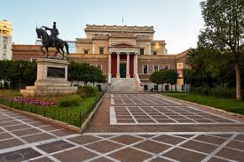 |
| Alamy | Old building of Greek parliament which currently houses National History Museum, Athens greece Stock Photo - Alamy | |
| eKathimerini.com | Averof building highlights capital's neoclassical past | eKathimerini.com | 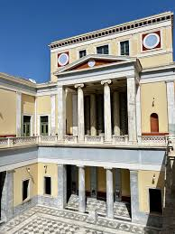 |
| GRtraveller | 2 YEARS HISTORY – In the “footsteps” of Kolokotronis – GRtraveller | 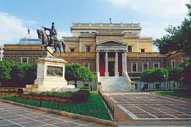 |
| I was sharing this to someone looking for a suggestion and thought I'd share them in a post. These photos are from The National Archaeological museum, my favourite museum in Athens, I'd | 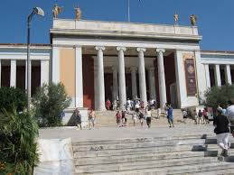 | |
| Shutterstock | 107 Stadiou Royalty-Free Images, Stock Photos & Pictures | Shutterstock | |
| Patmos. A windy day. #patmos #patmosgreece #greece #greek #summer #photographer #photos #photography #photograph #windy #greeksun #dodecanese #greekislands #greekisland #aegean #aegeanislands | 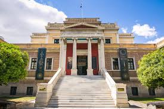 | |
| Wikimedia.org | File:Ionic column at the side entrance of the Old Parliament House in Athens on July 6, 2022.jpg - Wikimedia Commons | 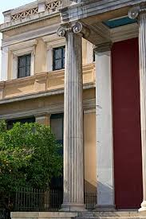 |
| American Chemical Society | National Technical University of Athens - ACS on Campus | 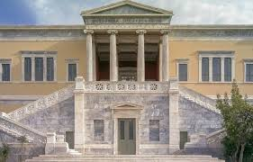 |
| ProtoThema | Theodoros Kolokotronis statue - ProtoThema English | 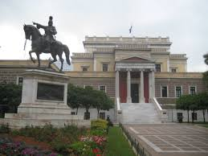 |
| ochravine.eu | OchraVine participates at Research night in NTUA - OchraVine Control | 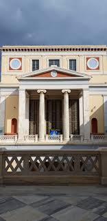 |
| Issuu | The Greek and Gothic Revivals in Europe 1750–1850 by Brepols - Issuu | 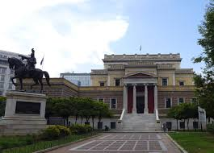 |
| cindysplanet.com | Top 12 Place to Visit in Athens (3D2N): Hadrian Arch, Temple of Olympian Zeus, Plaka, Monastiraki, National History Museum - Cindy's Planet | 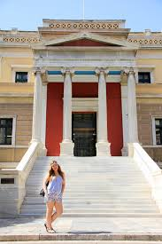 |
| Athinorama.gr | Γράφει: Athinorama Team - Athinorama.gr | |
| Photos by Zuzana Zatkuliak (@zuzanazatkuliakova) · January 26, 2026 | 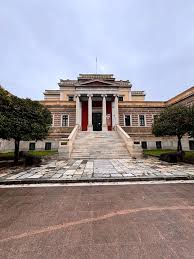 | |
| Alamy | Exterior shot of National History Museum located in the Old Parliament House at Stadiou Street in Athens, Greece Stock Photo - Alamy | 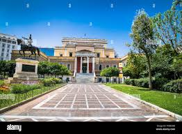 |
| Dave's Travel Pages | How to Visit the National Historical Museum of Greece | 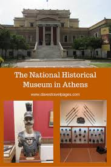 |
| Tripadvisor | THE 15 BEST Athens Monuments & Statues (2026) - Tripadvisor | 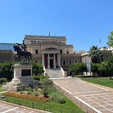 |
| GetYourGuide | Private Athens: Must See Spots with Hidden Gems | GetYourGuide | 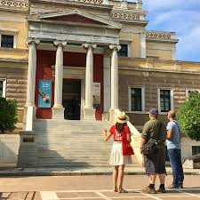 |
| Μεγάλη η χάρη της Ρόδο το αμάραντο Κόρη Παναγιά -Αμαρυλλέγκω -Αίωνιο Κάλλος🧜🏻♀️ | 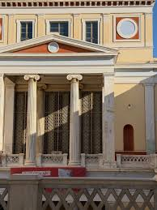 | |
| travel-greece.org | Discover Syros Island: The Ultimate Solo Travel Guide | 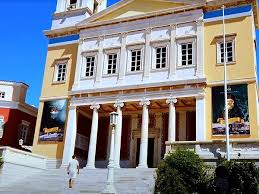 |
| pixels.com | After Sunset Acropolis of Athens Greece by Wayne Moran | 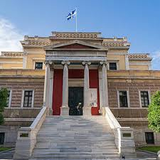 |
| Shutterstock | Athens Parliament: Over 12,180 Royalty-Free Licensable Stock Photos | Shutterstock | 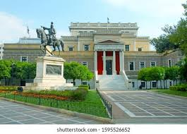 |
| X | International Association of Byron Societies (@IABSocieties) / Posts / X | 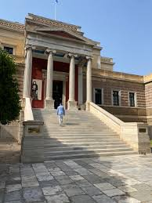 |
| Wikimedia.org | File:Athens Old Parliament House (Μέγαρο της Παλαιάς Βουλής) - panoramio (1).jpg - Wikimedia Commons | 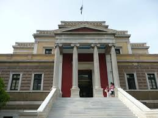 |
| ResearchGate | Athena LEOUSSI | Professor (Associate) | Licence, Grenoble, France; MPhil, Courtauld Institute of Art, London, UK; PhD, LSE, UK | University of Reading, Reading | Department of Modern Languages and European Studies | Research profile | 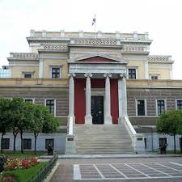 |
| Tripadvisor | National History Museum (Old Parliament) (2026) - All You MUST Know Before You Go (with Reviews) | |
| Alamy | National museum athens hi-res stock photography and images - Alamy | |
| Dreamstime.com | Greek National Historical Museum Editorial Photography - Image of parliament, historic: 408542302 | |
| SkyscraperCity | Neoclassical Athens, the city's 19th century rebirth | SkyscraperCity Forum | |
| Alamy | The Neoclassical National Historical Museum at the old Parliament building, Athens, Greece Stock Photo - Alamy | |
| Athens, except ancient sites and modern architecture, has some beautiful 19th century classical style buildings 🙂 | ||
| Thrillophilia | 10 Best Day Trips From Athens That You Shouldn't Miss! |
_-_panoramio.jpg){kind=link}
{kind=link}
{kind=link}
_-_panoramio_(1).jpg){kind=link}